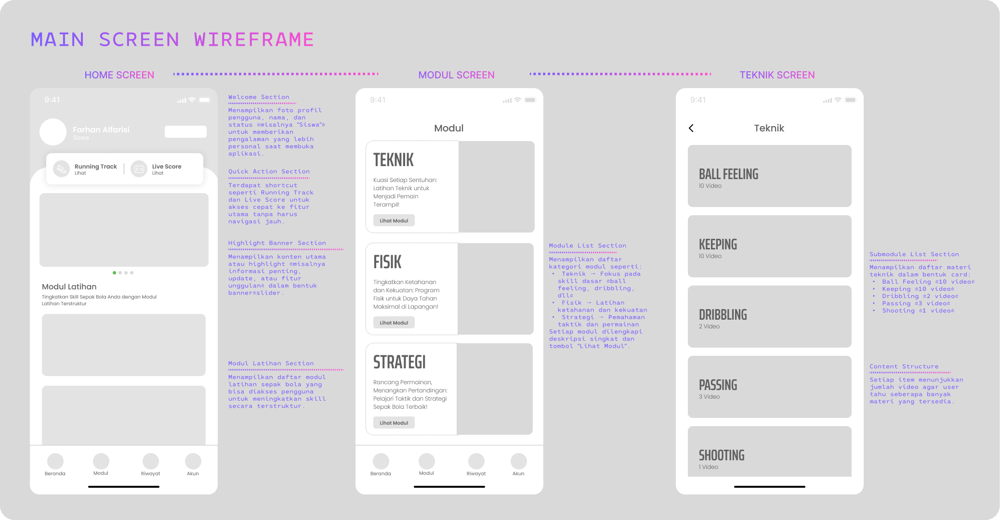
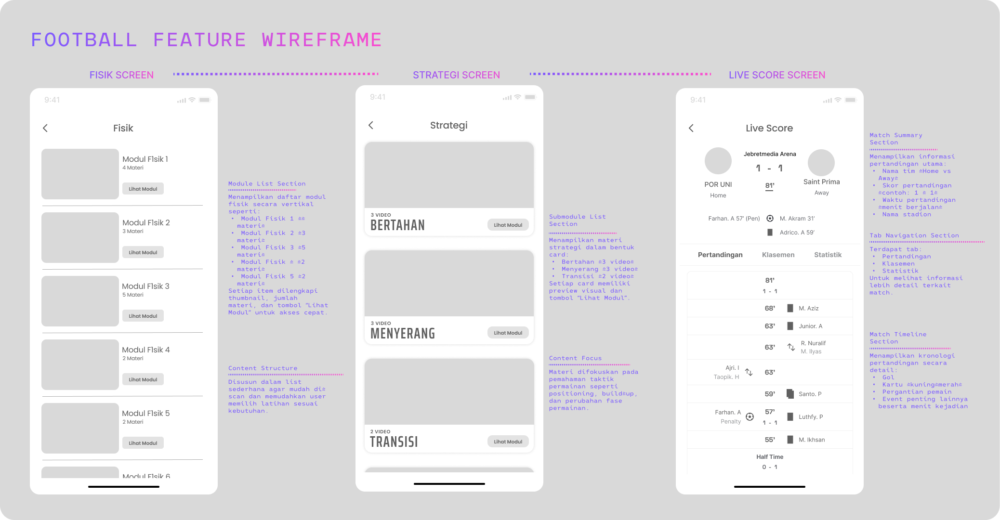
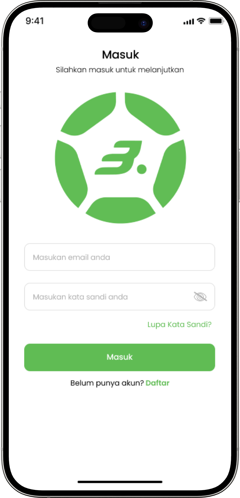
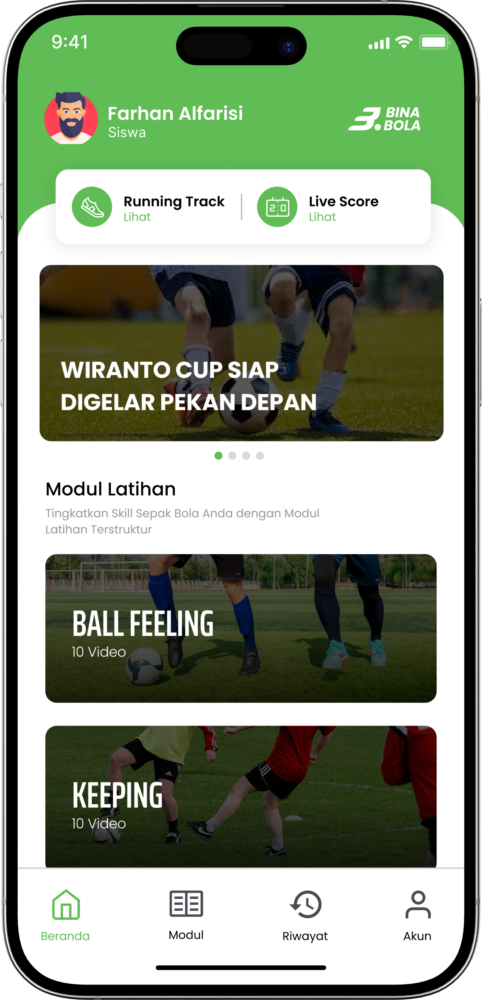
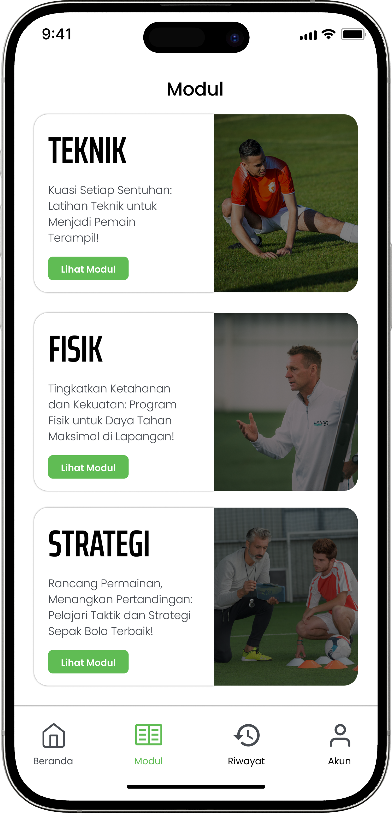
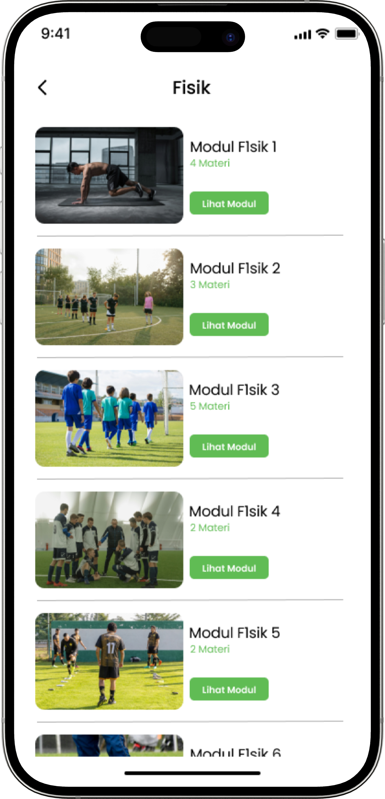
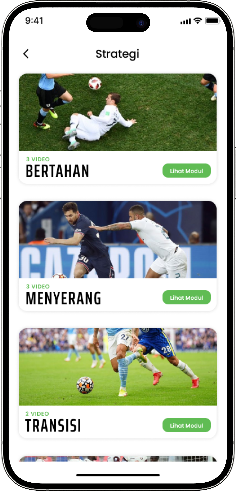
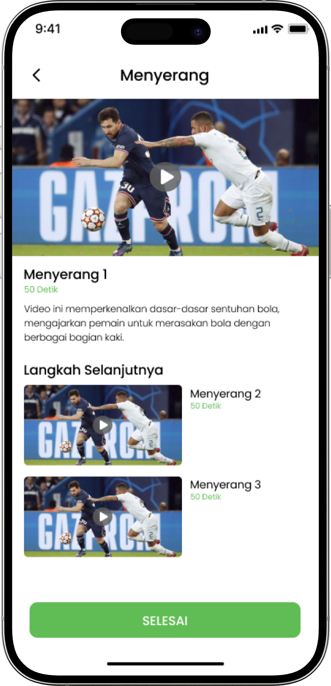

PROTOTYPE(EKSEKUSI SOLUSI)
GAMBARAN PROTOTIPE
Prototipe dengan tingkat fidelitas rendah hingga tinggi dikembangkan untuk menguji usability, alur navigasi, serta kejelasan pengalaman latihan. Fokus utama adalah memastikan pengguna dapat mengikuti program latihan dengan mudah, memantau progres, dan memahami setiap fitur tanpa kebingungan.
LOW FIDELITY
Wireframe low-fidelity difokuskan pada penyederhanaan alur latihan dan kejelasan di setiap langkah. Layar utama seperti program latihan, pelacakan performa, dan riwayat latihan dirancang sejak awal untuk menguji bagaimana pengguna berinteraksi dengan sistem.
Perhatian khusus diberikan pada pengurangan hambatan (friction) dalam proses latihan. Desain memastikan pengguna dapat mengikuti latihan dengan langkah yang sederhana, namun tetap terstruktur agar progres dapat dipantau dengan jelas.


PROTOTYPE
Pada tahap high-fidelity prototype, desain dikembangkan untuk merepresentasikan pengalaman latihan sepak bola yang lebih interaktif dan terarah. Fokus utama adalah bagaimana pengguna dapat mengakses program latihan, memahami instruksi teknik, serta memantau perkembangan performa secara konsisten.
Setiap komponen dirancang untuk mendukung proses latihan yang terstruktur, mulai dari pemilihan modul, latihan fisik dan teknik, hingga evaluasi performa. Sistem ini dibuat agar pengguna tetap termotivasi melalui alur yang jelas dan progres yang dapat dilihat secara langsung.








